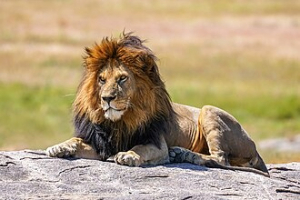

Chamo-me Vicente e tenho 17 anos.
Moro em Lisboa e sou filho único
| Nome | Idade | Nacionalidade | Naturalidade |
| Vicente Reis | 17 | Portugal | Lisboa |
Disciplinas favoritas ao longo da escola!
O leão é o meu animal preferido porque é o meu signo e o símbolo do meu clube.

Visita a segunda página do meu site para saber mais
Ir para página 2